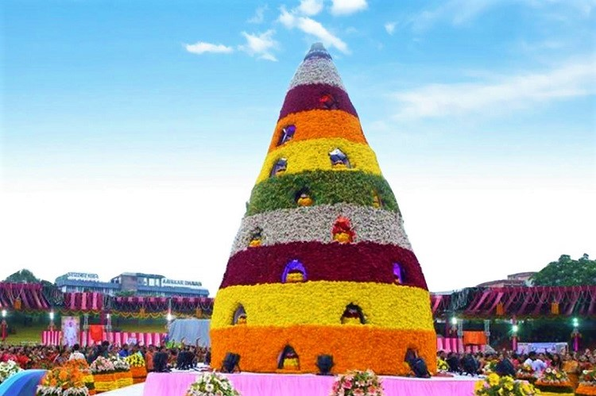

Diversity of Hyderabad
Festivals
Bathukamma
A floral festival celebrating the goddess of life, predominantly celebrated by women.
Ramzan

The holy month transforms the city with night bazaars and community iftars.
Traditional Arts

Bidri work
Ancient metal handicraft involving silver inlay work on blackened alloy.

Pearls o Hyderabad
Hyderabad's famous pearl industry, earning it the title "City of Pearls".